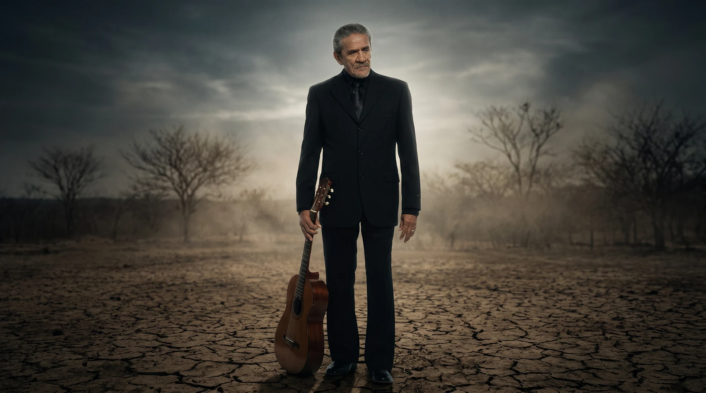
Trilogia • Fase I • O Retrato do Tempo
Zé Ramalho 50 anos
A maior celebração de sua carreira. Uma jornada nacional para uma obra que atravessou o Brasil, conectou gerações e se tornou parte da memória afetiva do país.
O marco
Existe apenas uma primeira vez.
Existe apenas um primeiro disco. Um primeiro grande sucesso. Um primeiro show. E existe apenas uma primeira celebração de 50 anos.
Em 2027, Zé Ramalho alcança um marco reservado a poucos artistas da história da música brasileira.
Uma oportunidade única. Irrepetível. Histórica.
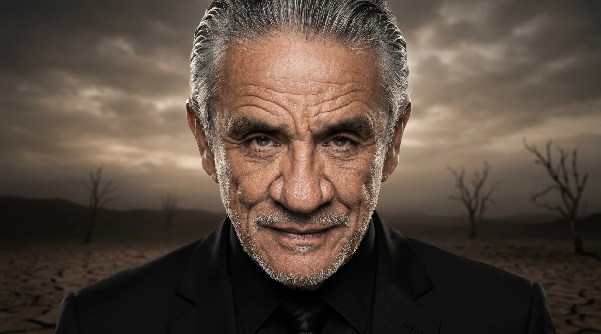
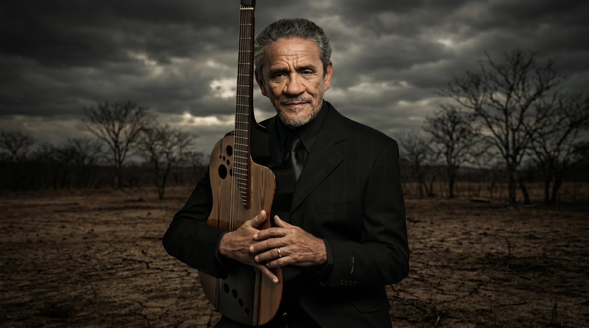
Cinco décadas
Uma obra que atravessou o Brasil.
Ao longo de cinco décadas, Zé Ramalho construiu uma das trajetórias mais consistentes da música brasileira.
Sua obra ultrapassou estilos, atravessou regiões, conectou gerações e se transformou em parte da memória afetiva do país.
O momento é agora
Não existe outro aniversário de 50 anos.
Não existe outra oportunidade de reunir público, imprensa, parceiros e mercado em torno de um marco dessa dimensão.
Mais do que uma turnê. Uma oportunidade histórica.

Celebrar
Uma das maiores trajetórias da música brasileira.
Mobilizar
Milhões de pessoas que acompanharam essa história.
Registrar
Esse legado para as próximas gerações.
Dimensão
Um projeto com a dimensão de sua história.
Mais do que uma turnê, uma jornada nacional construída para percorrer todas as regiões do Brasil: mais de um ano de duração, 50 shows previstos, participações especiais, projetos de mídia e registro histórico.
Trilogia dos 50 anos
Uma história grande demais para caber em uma única turnê.
Por isso nasce a Trilogia dos 50 anos: três capítulos, uma única história.

A Jornada
O capítulo que dá início às comemorações. Uma homenagem às origens, à estrada, ao público e ao Brasil.
Os Encontros
A obra em diálogo com artistas, repertórios, vozes e momentos capazes de ampliar seu alcance.
A Permanência
O legado registrado, preservado e projetado para as próximas gerações.
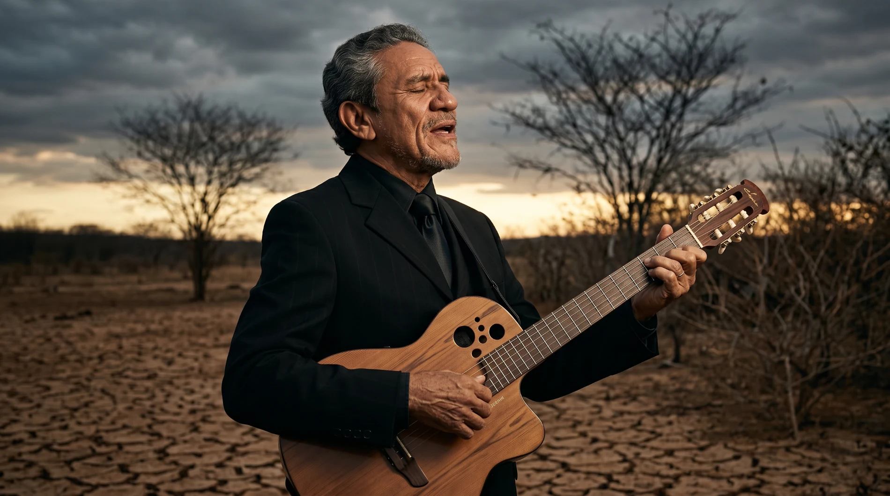
Fase I • A Jornada
À estrada. Ao público. Ao Brasil.
A Jornada inicia as comemorações como uma homenagem às origens e a tudo aquilo que ajudou a transformar uma trajetória artística em patrimônio cultural.
É a fase mais abrangente da trilogia: a mais nacional, a mais popular, a mais próxima do público.
Os pilares da jornada
Três territórios explicam a força e a permanência de sua obra.
As origens
O sertão. A poesia. A espiritualidade. A imaginação. Referências que ajudaram a construir uma das vozes mais singulares da música brasileira.
A estrada
50 anos percorrendo o Brasil. Milhares de quilômetros. Centenas de cidades. Uma trajetória construída encontro após encontro, canção após canção.
O povo
Há muito tempo, essas músicas deixaram de pertencer apenas ao artista. Elas passaram a viver nas histórias de quem canta, guarda e transmite essa obra adiante.
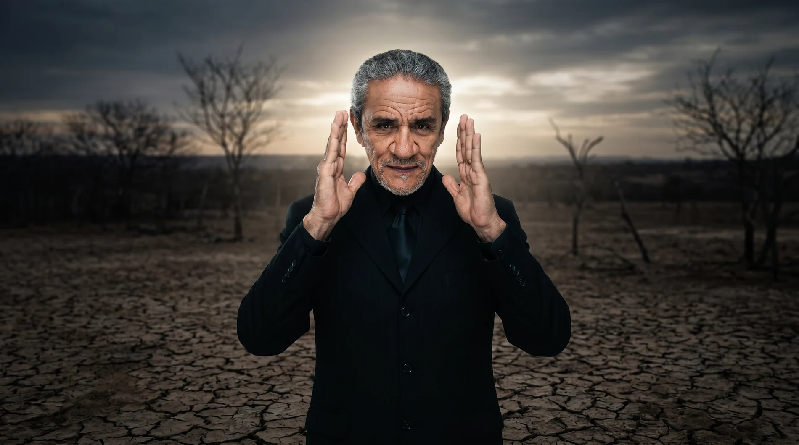
O Brasil como palco
A maior turnê da carreira de Zé Ramalho.

A Jornada percorrerá todas as regiões do Brasil, de fevereiro de 2027 a março de 2028, reunindo capitais, mercados estratégicos e ações especiais em cidades emblemáticas.
Com abertura em São Paulo e encerramento no Rio de Janeiro, a proposta estrutura uma celebração nacional para públicos de até 10 mil pessoas por show.
A jornada pelo Brasil
Meses de turnê por região
Capitais, mercados estratégicos e ações especiais
MacapáManausBelémSão LuísTeresinaFortalezaNatalJoão PessoaRecifeMaceióAracajuSalvadorCuiabáCampo GrandeGoiâniaBrasíliaBelo HorizonteVitóriaSão PauloRio de JaneiroCuritibaFlorianópolisPorto Alegre

O Brasil canta Zé Ramalho
Mais de um ano de estrada. Milhares de quilômetros percorridos. Milhões de pessoas impactadas.
Uma única história conectando o país inteiro.
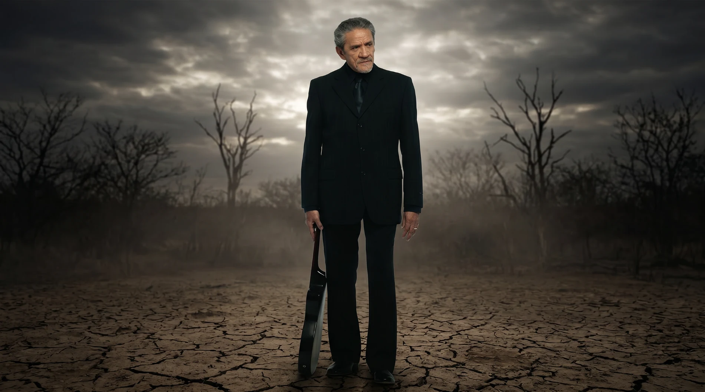
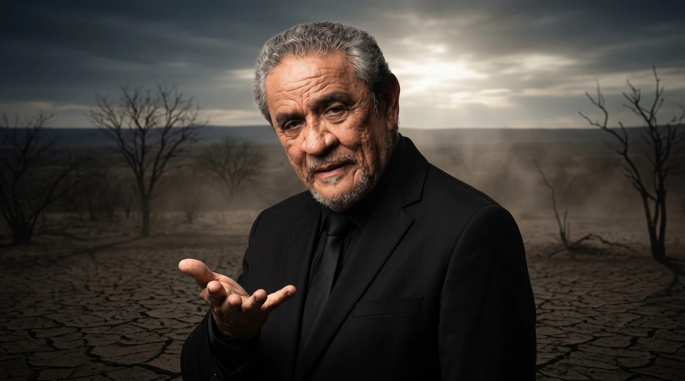
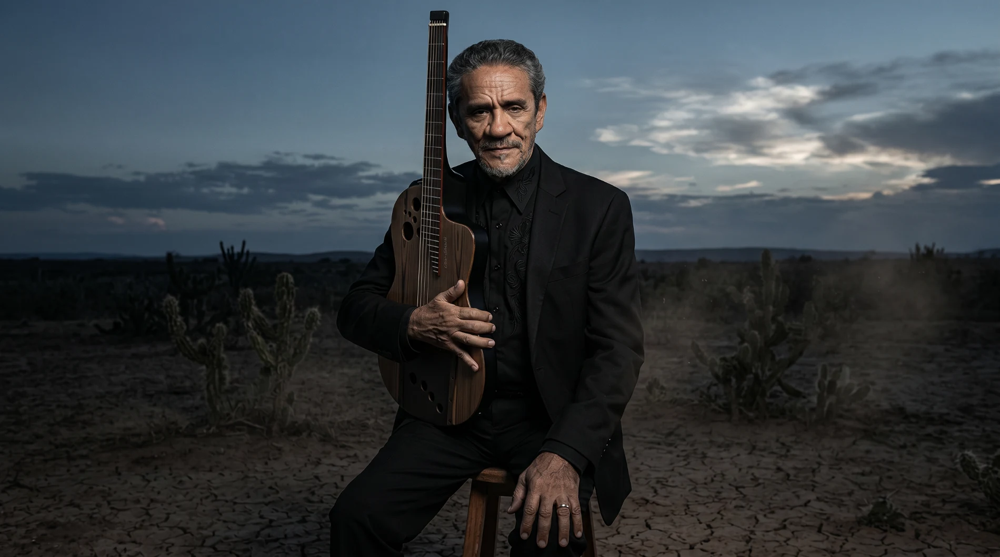

Encontros históricos
Momentos únicos. Momentos memoráveis.
Ao longo de cinco décadas, a obra de Zé Ramalho construiu conexões com alguns dos maiores nomes da música brasileira.
A celebração dos 50 anos abre espaço para encontros históricos, capazes de ajudar a contar essa trajetória em diálogo com artistas, gerações e repertórios.
Canção emblemática
Sinônimos
“Sinônimos” é uma das canções mais emblemáticas da música brasileira. Um encontro histórico entre Zé Ramalho e Chitãozinho & Xororó que atravessa décadas, emociona diferentes gerações e permanece viva na memória afetiva do país. Celebrar essa obra nos 50 anos de carreira de Zé Ramalho é criar a oportunidade de transformar uma história já consagrada em um momento verdadeiramente histórico.
Participações especiais previstas
Encontros organizados por praça, ampliando a força nacional da celebração.
As participações previstas reforçam a relação de Zé Ramalho com diferentes públicos, territórios e gerações, criando momentos especiais dentro da Jornada.
- Chitãozinho & Xororó
- Zeca Baleiro
- Alceu Valença
Encontro previsto para reforçar a potência nordestina da celebração.
- João Gomes
Diálogo entre gerações, público popular e nova audiência nacional.
- Sepultura
Contraste, intensidade e leitura contemporânea da obra.
- Elba Ramalho
Encontro de origem, memória afetiva e identidade nordestina.
- João Ramalho
Presença simbólica de continuidade, legado e elo entre gerações.

Leitura artística
Uma turnê costurada por encontros.
Cada praça acrescenta uma camada à narrativa da celebração: artistas, territórios, repertórios e públicos conectados à obra de Zé Ramalho.
Um acontecimento nacional
A celebração dos 50 anos possui potencial para ultrapassar os palcos.
A proposta amplia a turnê para uma plataforma cultural: TV, imprensa, streaming, redes sociais, conteúdos especiais e patrocínios nacionais.
O objetivo é transformar a celebração em um dos grandes acontecimentos culturais do Brasil em 2027.
Fantástico
Altas Horas
Marcos Mion
Assessoria de imprensa nacional
Conteúdos especiais
Redes sociais
Estratégia nacional de divulgação
Zé Ramalho como protagonista dos especiais de lançamento da turnê.
A celebração dos 50 anos merece começar da mesma forma que sua história foi construída: falando para o Brasil inteiro.
A frente nacional de mídia apresenta a Jornada como acontecimento cultural, reunindo trajetória, memória afetiva, repertório, bastidores e lançamento da turnê.
Especial de lançamento nacional da celebração.
Conversa musical, memória afetiva e alcance popular.
Presença multiplataforma e conexão com grandes audiências.
Repercussão coordenada em imprensa, portais, rádio e TV.

Merchandising oficial
Produtos que transformam a celebração em objeto de memória.
Além dos palcos e da mídia nacional, a Jornada também se desdobra em produtos oficiais pensados para fãs, colecionadores e ações licenciadas da turnê.

Vinil comemorativo
O item de maior valor simbólico da linha: uma peça de coleção para materializar os 50 anos de carreira em um objeto permanente, desejável e memorável.
Linha oficial prevista
- Camisetas
- Boné
- Ecobag
- Vinil comemorativo
- Poster
- Outros licenciados
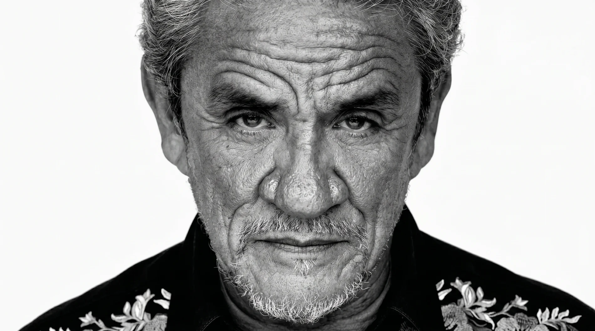
Um legado para as próximas gerações
Mais do que uma turnê. Uma oportunidade de registrar definitivamente uma das trajetórias mais importantes da música brasileira.
- Registro audiovisual
- Documentário
- Memória
- Acervo histórico
- Depoimentos
- Conteúdos especiais
Por que esta celebração é diferente?
Porque ela reúne escala, narrativa e permanência.
- 50 anos de carreira.
- Projeto nacional.
- Trilogia inédita.
- Mais de um ano de duração.
- Participações especiais.
- Lançamento nacional.
- Registro histórico.
- Presença em todas as regiões do Brasil.
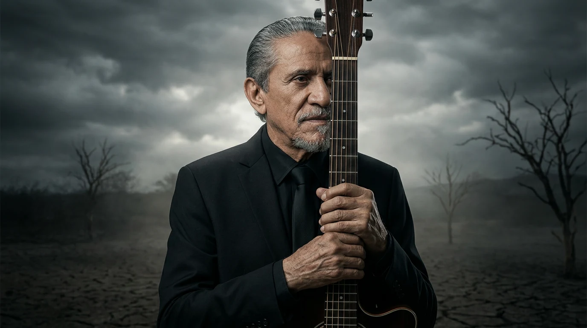

Síntese do projeto
A maior celebração da carreira de Zé Ramalho.
Este projeto não pretende transformar a obra de Zé Ramalho. Pretende celebrá-la, valorizá-la, ampliar seu alcance e construir uma comemoração compatível com a importância que essa trajetória possui para a música brasileira.
Vídeo
Filme manifesto da celebração.
Manifesto final
Existem artistas que fazem sucesso. Existem artistas que marcam gerações.
Existem artistas que entram para a história. E existem aqueles raros que se transformam em parte da identidade cultural de um país.
Durante cinquenta anos, Zé Ramalho fez exatamente isso. Agora chegou o momento de celebrar essa história.
Não com uma turnê. Mas com a maior homenagem já realizada à sua trajetória.
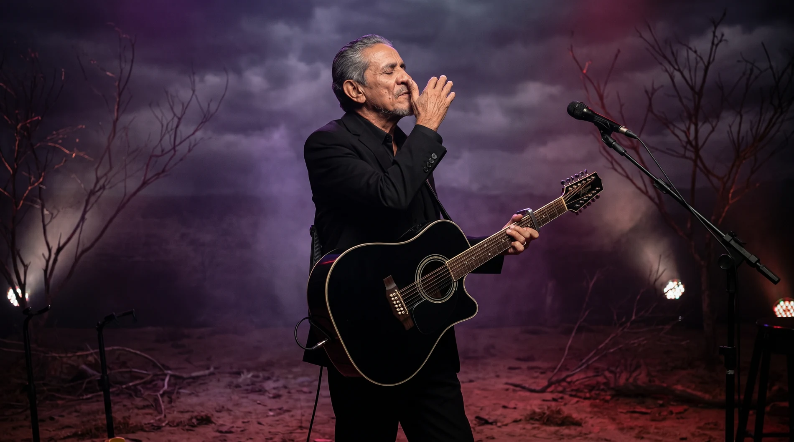
- Diretor Artístico
- Gian Zambon
- Direção Executiva
- Bruno Neves
- Diretor de Planejamento
- Adriano Pinheiro
- Diretor de Arte
- Bruno Magrini
- Vídeo, Motion & Web Designer
- Tawam Siqueira
O conteúdo desta apresentação é de autoria da SevenX e está protegido pelas Leis nº 9.610/98 e nº 9.279/96. É vedada sua reprodução, utilização ou divulgação sem autorização prévia. Todos os direitos reservados.